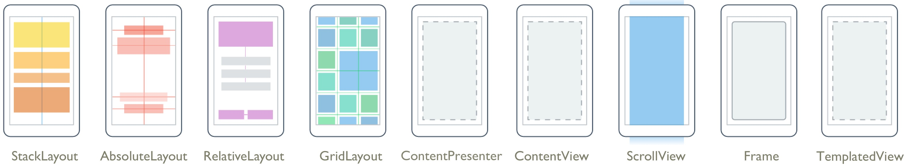

Disciplinas
DESENVOLVIMENTO PARA DISPOSITIVOS MÓVEIS. Concluído
Materiais
[UFMS Digital] Desenvolvimento Dispositivos Móveis - Módulo 2 - Unidade 1 - Vídeo 1 sendProf° ministrante: Dr. Rafael dos Passos Canteri.
Gerenciador de layout.
- Um gerenciador de layout no Android serve para definir a organização visual dos elementos de interface do usuário na tela.
- Ele determina como os componentes visuais, chamados Views, como botões, textos e imagens, serão posicionados e exibidos no dispositivo móvel.
- Os gerenciadores de layout são essenciais para:
- Organizar os elementos na tela, seja em linhas, colunas ou sobreposições.
- Ajustar o tamanho e a posição dos elementos para diferentes tamanhos de tela e orientações.
- Gerenciar o espaço entre os elementos, conhecido como "padding" e "margin".
- Definir como os elementos reagirão a mudanças no tamanho da tela, garantindo que a interface seja responsiva e adaptável.
Dimensionamento: largura e altura.
- Propriedades básicas para qualquer layout ou componente:
- android:layout_width
- android:layout_height
- Podem ser:
- match_parent – se adapta ao ancestral
- wrap_content – se adapta ao conteúdo
- valores numéricos: dp (componentes), sp (texto).
Margin e Padding.
- Atributos mais utilizados no posicionamento de componentes:
- android:layout_margin - margem externa
- android:padding - margem interna
- Ambos suportam os sufixos:
- Top
- Bottom
- Left
- Right
Principais tipos - gerenciador de layout.
- Relative Layout
- Constraint Layout
- Linear Layout
- Frame Layout
- Grid Layout
- Table Layout

- Usado para layouts flexíveis e complexos.
- A posição de cada componente está relacionada com outro componente.
- Atributos importantes:
- android:layout_above
- android:layout_toRightOf
- android:layout_alighParentTop
- android:layout_centerInParent
- Usado para layouts flexíveis e complexos.
- Necessita definição de restrições/regras de posicionamento entre os componentes e a tela.
- Mais flexível que Relative Layout e mais fácil de usar com o editor de layout do Android Studio.
- Uma evolução do Relative Layout.
- Dispõe os componentes na vertical ou na horizontal.
- Requer aninhamento de outros layouts para determinadas funções.
- Atributos importantes:
- android:layout_weight (atribui peso ao componente) - ocupa espaço restante
- android:orientation = vertical | horizontal
- android:layout_gravity (externo) - componente
- android:gravity (interno) - conteúdo
- Simples de utilizar.
- Usado quando se deseja colocar apenas um único elemento dentro dele.
- Funciona como camadas.
- Suporta sobreposição de componentes.
- Atributos importantes:
- android:layout_gravity (externo)
- android:gravity (interno)
- Dispõe os componentes em grade.
- Atributos importantes:
- android:columnCount
- android:rowCount
- android:layout_row
- android:layout_column
- android:layout_rowSpan
- android:column_span
- android:layout_gravity
- Mais fácil de controlar que o Grid Layout.
- Atributos importantes:
- TableRow - linha da tabela.
- android:stretchColumns - quais colunas irão expandir seu conteúdo.
- android:layout_span - quantas colunas o componente ocupará.